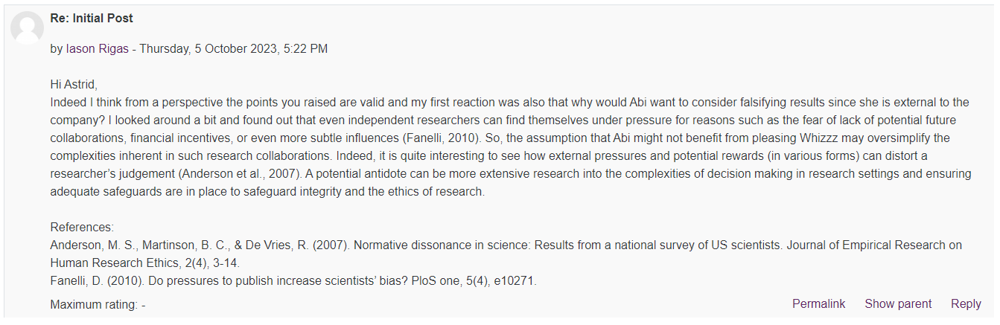
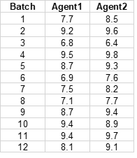
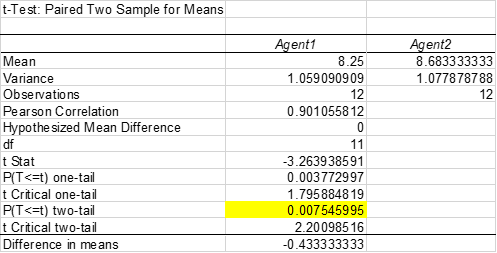
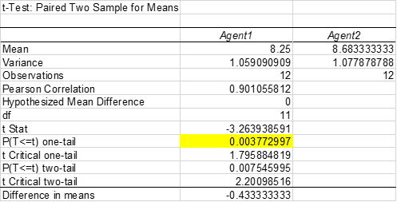
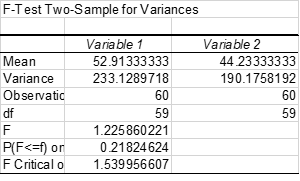
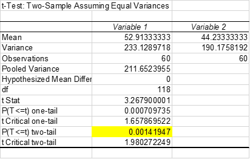

In unit 8 we looked into different analysis for quantitative data. We looked at statistical inference, datasets, dispersion, variables, hypothesis testing. I did not spend too much time into it as since this is my second master's and I have used statistical inference as my main analytical tool in the past. What has been slightly different was the tooling as last time I worked with SPSS. I carried out the exercises mainly to familiarise myself with the possibilities in excel. In parallel I also continued with the discussions in the Unit 7 forum:

Exercises:
Exercise 8.1Solved xls file here
Open the Excel workbook in Exe 8.1B.xlsx from the Exercises folder. Obtain the sample size, sample mean weight loss and the sample standard deviation of the weight loss for Diet B. Place these results in the block of cells F23 to F25, using the same format as that employed for the Diet A results in the above example.
Briefly interpret your findings. What do these results tell you about the relative effectiveness of the two weight-reducing diets?
Answer:
Diet B n=50 Mean= 3.710 SD= 2.769.
The sample size is 50 people, the sample mean loss for diet B is 3.7 kg and the standard deviation is 2.760 kg. Compared to diet A diet B appears to be less effective as it was less succesful. Additional tests would be needed to establish the statistical significance of this suggestion.
Exercise 8.2
Solved xls file here
Open the Excel workbook in Exe 8.2B.xlsx from the Exercises folder. Obtain the sample median, first and third quartiles and the sample interquartile range of the weight loss for Diet B. Place these results in the block of cells F26 to F29, using the same format as that employed for the Diet A results in the above example.
Based on the provided statistics, Diet A appears to be more effective in terms of average weight loss compared to Diet B. However, it's worth noting that the results for Diet B seem to have a bit more variability, as indicated by its higher standard deviation and IQR.
Mean Weight Loss:
Diet A has a higher mean weight loss compared to Diet B, suggesting that on average, individuals on Diet A lost more weight.
Median Weight Loss:
The median for Diet A is also higher than Diet B, further suggesting that the central tendency of weight loss for Diet A is greater than Diet B.
Standard Deviation:
Diet B has a slightly higher standard deviation than Diet A, implying that the weight loss results for Diet B are more spread out or varied than those for Diet A.
Interquartile Range:
The IQR for Diet B is slightly higher than Diet A, which again suggests a greater spread between the 25th and 75th percentiles for Diet B compared to Diet A.
Quartiles:
The quartiles suggest that 75% of people on Diet A lost up to 7.033 units (could be pounds, kilograms, etc.), while 75% of people on Diet B lost up to 5.404 units. Additionally, 25% of people on Diet A lost at least 3.748 units, while 25% of people on Diet B lost at least 1.953 units.
Exercise 8.3
Solved xls file here
Open the Excel workbook in Exe 8.3D.xlsx from the Exercises folder. Obtain the frequencies and percentage frequencies of the variable Brand, but this time for the Area 2 respondents, using the same format as that employed for the Area1 results in the above example.
| Frequencies | Area 1 | Area 2 |
| A | 11 | 19 |
| B | 17 | 30 |
| Other | 42 | 41 |
| Total | 70 | 90 |
| Percentages | Area 1 | Area 2 |
| A | 15.7 | 21.1 |
| B | 24.3 | 33.3 |
| Other | 60.0 | 45.6 |
| Total | 100 | 100.0 |
In Area 2 brands A and B are more popular. In Area 1 however other brands are more popular.
Exercise 8.4
Solved xls file here


The
difference in means is of statistical significance as the p value is below
0.05. This suggests that the population mean impurity does differ statistically
between the two filtration agents, with Agent 2 performing best.
Solved xls file here
For exercise 8.5 we are looking into the one tailed test.

The results of the one tail test suggests that with a p value of 0.003 there is strong evidence that agent 2 is more effective. Therefore the null hupothesis that agent 1 is more effective is rejecter and the alternative hypothesis that agent 2 is more effective is accepted.
Exercise 8.6
Solved xls file here
We start by running an F test two sample for variances to determine if the observer F ratio is statistically significant.

The observed F ratio is less than the critical F value and the p value is greater than the significance level of 0.05. Therefore it can be concluded that the observed F ratio is not significant a therefore the variances do not differ hence we use an equal variances test.

With a
t=3.26 and 118 DFs the associated p value is 0=0.0014 and therefore the
observed t is statistically significant. There is strong evidence in this
population suggesting that the mean income for males exceeds that of females. This
of course depends on the assumption that the sample is representative of the
population.